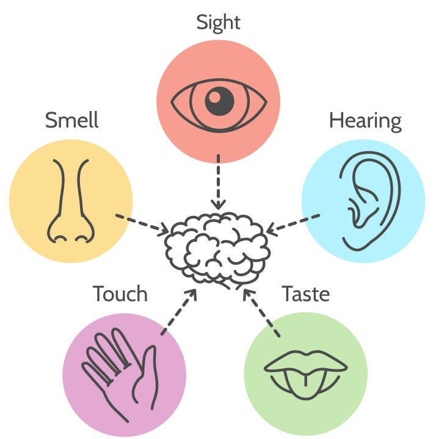
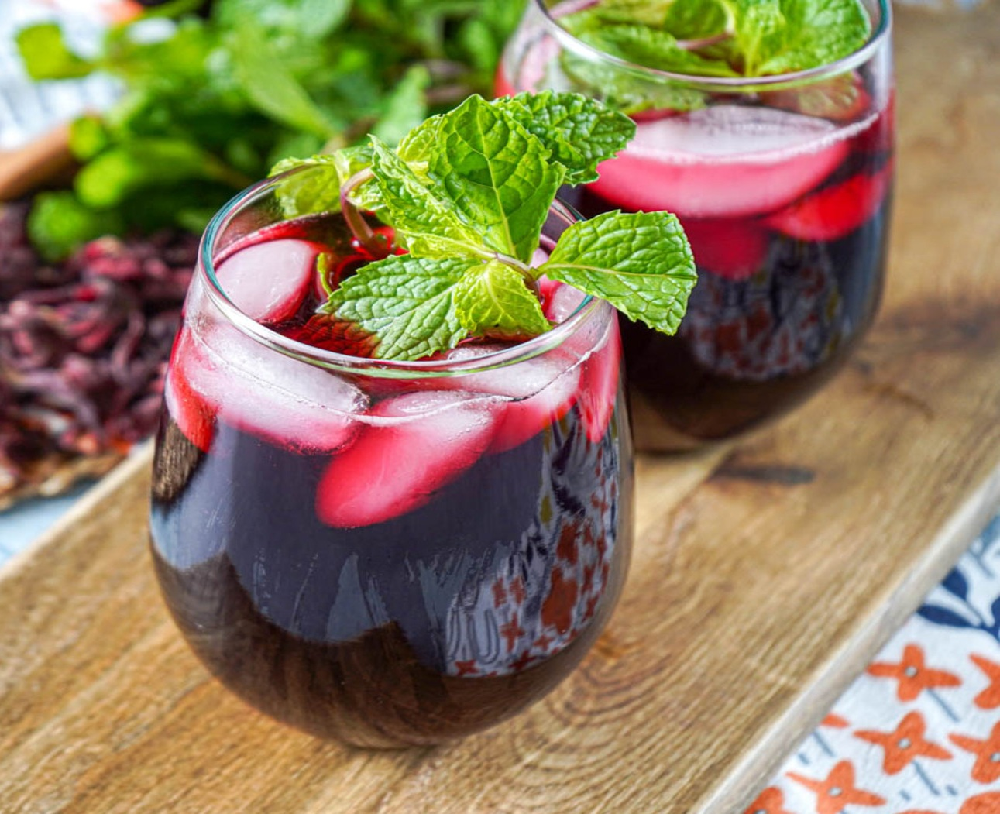
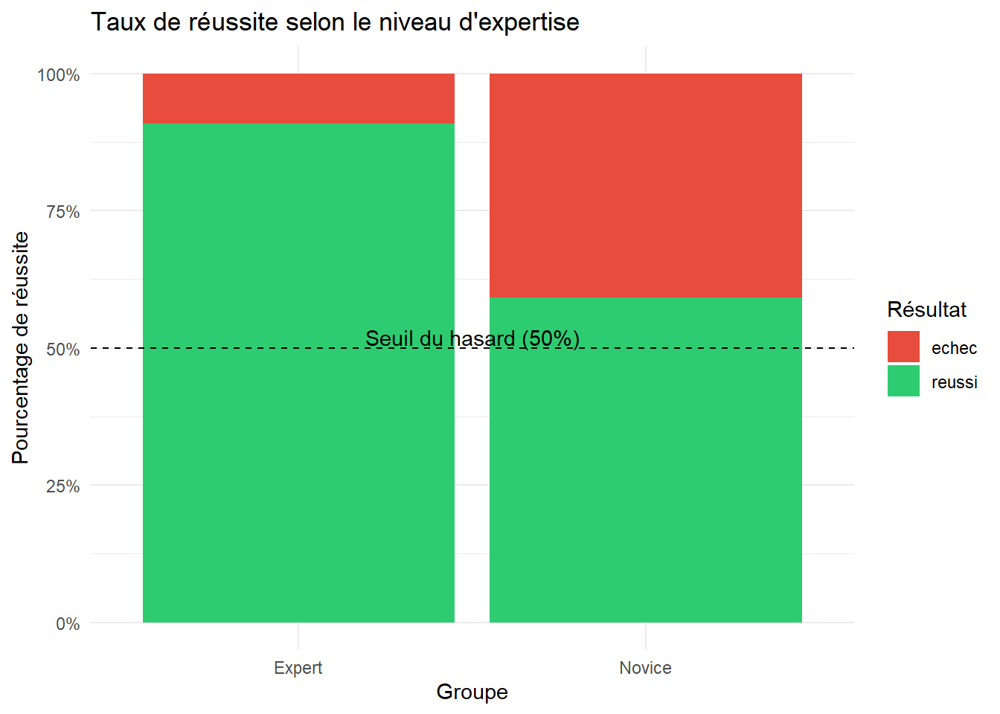
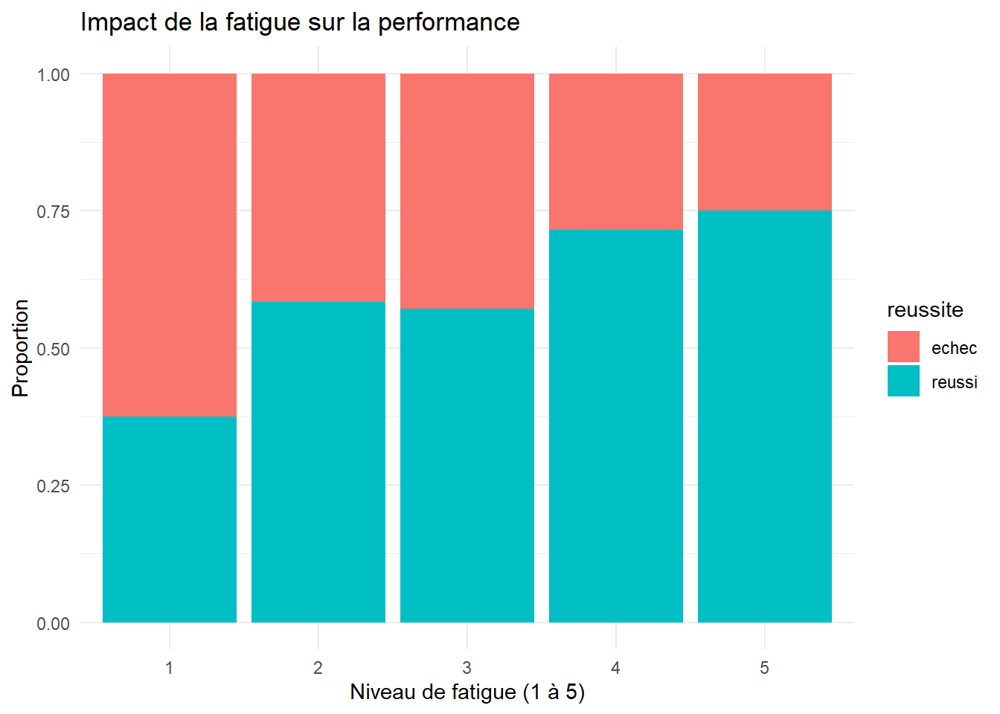
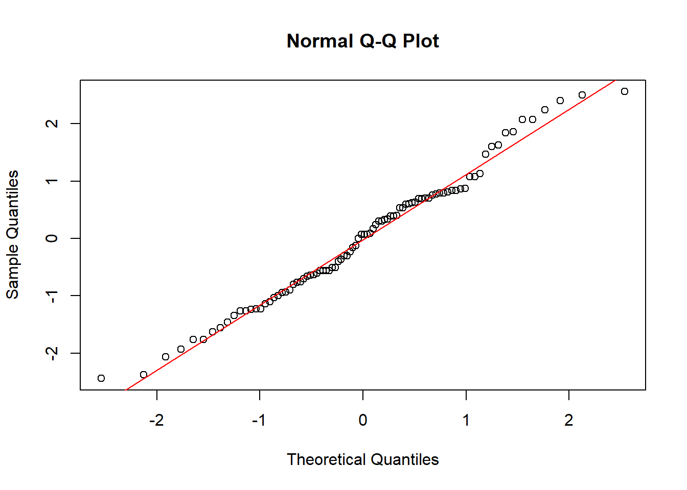

set.seed(789)
library(DT)
n_etudiants <- 60
data_paire <- data.frame(
id = 1:n_etudiants,
expertise = sample(c("Expert", "Novice"), n_etudiants, replace = TRUE, prob = c(0.3, 0.7)),
ordre = sample(c("Nature-Vanille", "Vanille-Nature"), n_etudiants, replace = TRUE)
)
data_paire$reussite <- mapply(function(exp) {
prob <- ifelse(exp == "Expert", 0.78, 0.63)
res <- rbinom(1, 1, prob)
ifelse(res == 1, "reussi", "echec")
}, data_paire$expertise)Du palais à la p-value
Une première immersion dans l’analyse sensorielle
L’Analyse Sensorielle regroupe l’ensemble des protocoles scientifiques permettant de mesurer et d’interpréter les propriétés organoleptiques d’un produit. Contrairement aux outils de mesure classiques, l’Analyse Sensorielle place l’etre humain et ses sens au coeur du disposititif de mesure.
Émergée dans les années 1960 aux États-Unis, cette discipline est devenue le complément indispensable des analyses physico-chimiques traditionnelles. Elle permet de valider ce qu’aucune machine ne peut totalement quantifier : la perception globale et le plaisir de l’utilisateur.

Sujets de mesures
En analyse sensorielle, les tests sont réalisés par des personnes que l’on nomme sujets. On va chercher chez ces sujets certaines caractéristiques :
fiabilité : aptitude à donner des mesures très voisine lors de l’application du même signal d’entrée
répétabilité : réponses fidèles quand l’analyse sensorielle est faite dans les mêmes conditions (même salle, mêmes tests…)
reproductibilité : répétition faite en faisant varier certaines conditions d’une répétition à l’autre (lieux, résultats inter laboratoires…)
justesse : moyenne des indications données et très voisine de la valeur vraie de la grandeur à mesurer
Dispersion des résultats
La variabilité observée lors d’une évaluation sensorielle provient de deux sources principales : le produit lui-même et le facteur humain (les sujets).
La variabilité liée aux produits
Pour obtenir des conclusions fiables, il est crucial de maîtriser la représentativité des échantillons.
On cherche à présenter des produits identiques au sein d’un même lot pour ne mesurer que la différence voulue.
La variabilité liée aux sujets (Facteur Humain)
La variance inter-individuelle (entre les sujets), elle reflète les différences de perception ou d’utilisation de l’échelle d’un juge à l’autre.
La variance intra-individuelle (au sein d’un même sujet), elle mesure le manque de répétabilité d’un juge (sa capacité à donner la même réponse pour un même produit lors de deux séances différentes).
Experience illustratrice
Le Bissap Istomien est une boisson emblématique appréciée par les étudiant-es. Afin d’améliorer la recette, nous testons l’ajout de vanille.
L’objectif est de déterminer si cet ajout crée une différence gustative perceptible et d’en caractériser l’intensité.
Nous allons construire son profil sensoriel. Il servira de support pour illustrer les différents tests présentés plus bas.

Tests discriminatifs
Les tests discriminatifs sont utilisés si l’enjeu est simplement de détecter une différence entre des échantillons,
Ils ont pour mission exclusive de déceler la présence ou l’absence d’une différence sensorielle entre deux produits. Elles sont particulièrement indiquées lorsque les écarts sont supposés faibles ou inconnus.
Si ces tests permettent de dire si une différence existe, ils ne permettent en aucun cas de la nommer (identifier sa nature) ni de la mesurer (quantifier son intensité).
Test par Paire
Principe et Protocole
Le test par paire est la méthode de discrimination la plus élémentaire. Elle consiste à présenter deux échantillons simultanément pour répondre à une question précise.
Le sujet reçoit deux échantillons codés (A et B). Le protocole repose sur un choix forcé (le sujet doit obligatoirement désigner un produit). On présente les deux combinaisons de manière égale, c’est à dire AB et BA.
On distingue deux variantes principales :
Test Unilatéral : On demande au sujet lequel des deux produits est le plus intense sur un critère précis (ex: “Lequel est le plus sucré ?”).
Test de Préférence : On demande au sujet quel produit il préfère.
Le choix s’effectue ici entre seulement deux options, donc :
Probabilité de succès par hasard (p) : 1/2 (50 %).
Probabilité d’échec par hasard (q) : 1/2 (50 %).
Avantages et Indications
C’est le test le plus accessible, tant pour l’organisateur que pour le sujet.
Très peu d’effort cognitif requis. Il est idéal pour des sujets non entraînés, ou des produits très complexes où une comparaison à trois (Triangle) saturerait les sens.
Cependant sa puissance statistique est faible. Comme la probabilité de réussir par hasard est élevée (50 %), il faut un panel plus large (souvent n>30) pour obtenir un résultat significatif par rapport au test triangulaire.
Exploitation Statistique
L’analyse repose sur la comparaison du nombre de réponses obtenues avec les valeurs de la Loi Binomiale (p=0,5).
- Hypothèse Nulle \(H_0\) : Les deux produits sont perçus comme identiques (ou aimés de façon égale), le choix est dû au hasard.
\[H_0: \quad p = \frac12\]
- Hypothèse Alternative \(H_1\) : Un produit est significativement distingué ou préféré. \[H_1: \quad p > \frac12\]
On utilise le test binomial exact. Si la p-value est inférieure à \(\alpha\), on conclut à une différence ou préférence significative.
Application
Test par Paire (Bissap Nature vs Vanille)
L’objectif est de vérifier si l’ajout de vanille est détecté par les étudiants de l’ISTOM lors d’une comparaison directe.)
Code pour générer nos données
Test Binomial
n_reussi = sum(data_paire$reussite == "reussi")
n_total = nrow(data_paire)
binom.test(x = n_reussi, n = n_total, p = 0.5, alternative = "greater")
Exact binomial test
data: n_reussi and n_total
number of successes = 39, number of trials = 60, p-value = 0.01367
alternative hypothesis: true probability of success is greater than 0.5
95 percent confidence interval:
0.5363726 1.0000000
sample estimates:
probability of success
0.65 Nombre de succès (17 / 30) : Un peu plus de la moitié des étudiants ( 56,7 % ) ont désigné le produit vanillé.
La p-value \(0,2923\). C’est l’indicateur majeur. Elle est largement supérieure au seuil classique \(\alpha\) de \(0,05\) (5 %). On rejette donc l’hypothèse nulle.
Influence de l’Expertise sur la réussite
Il est intéressant de voir si les “Experts” ont effectivement mieux détecté la vanille que les “Novices”. Pour cela, on utilise un tableau de contingence et un test de Fisher (plus robuste que le Chi-deux sur de petits effectifs).
# Tableau croisé
table_exp = table(data_paire$expertise, data_paire$reussite)
print(table_exp)
echec reussi
Expert 1 10
Novice 20 29# Test de Fisher
fisher.test(table_exp)
Fisher's Exact Test for Count Data
data: table_exp
p-value = 0.07786
alternative hypothesis: true odds ratio is not equal to 1
95 percent confidence interval:
0.003189801 1.195874151
sample estimates:
odds ratio
0.1486264 La p-value est de 0,07786. Elle est supérieure à 0,05. On ne peut pas rejeter l’hypothèse nulle au seuil de 5%. On conclut qu’il n’y a pas de différence significative entre les experts et les novices au seuil de 5%.
On peut ensuite essayer de visualiser cette expertise. Ce graphique permetra de comparer visuellement le taux de succès entre les deux groupes.
library(ggplot2)
ggplot(data = data_paire,
aes(x = expertise, fill = reussite)) +
geom_bar(position = "fill") +
scale_y_continuous(labels = scales::percent) +
scale_fill_manual(values = c("reussi" = "#2ecc71", "echec" = "#e74c3c")) +
labs(title = "Taux de réussite selon le niveau d'expertise",
x = "Groupe",
y = "Pourcentage de réussite",
fill = "Résultat") +
geom_hline(yintercept = 0.5, linetype = "dashed", color = "black") +
annotate("text", x = 1.5, y = 0.52, label = "Seuil du hasard (50%)") +
theme_minimal()
Calcul de la distance sensorielle (d prime)
library(sensR)
discrim(n_reussi, n_total, method = "twoAFC")
Estimates for the twoAFC discrimination protocol with 39 correct
answers in 60 trials. One-sided p-value and 95 % two-sided confidence
intervals are based on the 'exact' binomial test.
Estimate Std. Error Lower Upper
pc 0.6500 0.06158 0.51597 0.7687
pd 0.3000 0.12315 0.03194 0.5373
d-prime 0.5449 0.23510 0.05663 1.0387
Result of difference test:
'exact' binomial test: p-value = 0.01367
Alternative hypothesis: d-prime is greater than 0 Ici d-prime (d′) est égale à 0,2374.
C’est la distance sensorielle. Une valeur de 0,24 est extrêmement faible. En analyse sensorielle, on considère qu’une différence commence à être intéressante au-delà de 1 et qu’elle est évidente au-delà de 2.
Test Duo-Trio
Principe et Protocole
Le test Duo-Trio est une épreuve de différence où l’on présente au juge un échantillon identifié comme Témoin (R), suivi de deux échantillons codés (A et B). L’un des deux échantillons codés est identique au témoin.
La mission du juge est de répondre à la question : « Lequel de ces deux échantillons est identique au témoin ? »
Il existe quatre ordres de présentation possibles, selon que le témoin est le produit A ou le produit B :
Si A est le témoin : A (témoin) suivi de {A, B} ou A (témoin) suivi de {B, A}.
Si B est le témoin : B (témoin) suivi de {A, B} ou B (témoin) suivi de {B, A}.
Contrairement au test triangulaire (cf prochain paragraphe), le choix s’effectue ici entre seulement deux options :
Probabilité de succès par hasard (p) : 1/2 (soit 50 %).
Probabilité d’échec par hasard (q) : 1/2 (soit 50 %).
Avantages et Indications
Le test Duo-Trio est souvent privilégié dans les situations suivantes :
Ce test est adapté pour les produits complexes ou agressifs. Comme le sujet connaît déjà la référence (le témoin), l’effort cognitif et sensoriel est moindre, ce qui limite la saturation.
Exploitation Statistique
Définition de l’Hypothèse Nulle ( \(H_0\) )
L’hypothèse nulle postule qu’il n’y a aucune différence sensorielle perceptible entre l’échantillon témoin \((R)\) et les échantillons présentés. En d’autres termes les deux produits sont identiques, la probabilité de désigner l’échantillon correct est uniquement due au hasard. D’un point de vue purement statstatistique : \[H_0 \ : \ p= 1/2\]
Définition de l’Hypothèse Alternative ( \(H_1\) )
C’est l’hypothèse que nous cherchez généralement à prouver. Elle postule qu’il existe une différence réelle. En d’autres termes les produits sont perçus comme différents, la probabilité de réussite est significativement supérieure au hasard. D’un point de vue purement statistique : \[H_1 \ : \ p > 1/ 2\]
Les résultats sont analysés via la loi binomiale. On compare le nombre de réponses correctes observées au nombre minimal requis pour atteindre une significativité statistique (souvent fixée à \(\alpha= 5\%\)).
Application
Nous allons utiliser le Test Duo-Trio :
Le sujet goûte un échantillon de référence.
Il goûte ensuite deux échantillons codés, dont l’un est identique à l’échantillon de référence
Question posée : Lequel des deux échantillons codés est identique au témoin ?
Code pour générer nos données
# Nombre de sujets
n_sujets = 60
# Les 4 combinaisons réelles du Duo-Trio
# Témoin - Premier Échantillon - Deuxième Échantillon
ordres_possibles = c("A-AB", "A-BA", "B-AB", "B-BA")
# Création du jeu de données
data_duotrio = data.frame(
id = 1:n_sujets,
# On tire au sort parmi les 4 ordres possibles
ordre = sample(ordres_possibles, n_sujets, replace = TRUE),
expertise = sample(c("Expert", "Novice"), n_sujets, replace = TRUE, prob = c(0.2, 0.8)),
fatigue = sample(1:5, n_sujets, replace = TRUE) # Score de fatigue auto-déclaré (sur 5)
)
# Simulation des résultats
data_duotrio$reussite <- mapply(function(exp) {
p_reussite <- ifelse(exp == "Expert", 0.75, 0.55)
ifelse(rbinom(1, 1, p_reussite) == 1, "reussi", "echec")
}, data_duotrio$expertise)n_sujets[1] 60n_reussi = sum(data_duotrio$reussite == "reussi")
n_reussi[1] 37Il n’est pas suffisant de simplement observer le nombre personnes qui ont réussi (ici n_reussi sur 60) pour conclure. Est-ce que ces 27 personnes ont réellement senti la vanille, ou ont-elles simplement eu de la chance ?
Le test binomial exact est l’outil statistique qui permet de trancher. Il compare nos résultats réels à ce que le hasard pur aurait produit (une chance sur deux pour ce test Duo-Trio). On cherche à savoir si la proportion de bonnes réponses est significativement supérieure à 50 %.
binom.test(n_reussi, n_sujets, p = 0.5, alternative = "greater")
Exact binomial test
data: n_reussi and n_sujets
number of successes = 37, number of trials = 60, p-value = 0.04623
alternative hypothesis: true probability of success is greater than 0.5
95 percent confidence interval:
0.5024333 1.0000000
sample estimates:
probability of success
0.6166667 Le panel a correctement identifié l’échantillon 37 fois sur 60. Cela représente un taux de succès de 61,6 %. On constate une nette progression par rapport au hasard théorique (50 %).
On peut lire que la p-value = 0.04623. C’est le chiffre pivot !
Interprétation de la p-value
Pour qu’un test soit statistiquement significatif, la p-value doit être inférieure au seuil \(\alpha\) fixé.
On fixe ici \(\alpha\) à \(5\%\). On peut lire que 0,04623 est inférieur à 0,05. Ce qui signifie qu’il y a moins de 5 % de chances que ce résultat soit dû au pur hasard. On rejette donc l’hypothèse nulle (H0).
Il est également donné l’intervalle de confiance à \(95\%\). La borne inférieure de l’intervalle est de 0,502 (soit 50,2 %). Comme cette valeur est supérieure à 0,50, cela confirme statistiquement que la capacité de détection du panel est supérieure au hasard, même si c’est de peu.
Conclusion : Le test Duo-Trio est significatif. Avec un risque d’erreur inférieur à \(5\%\), nous pouvons affirmer que l’ajout de vanille dans le Bissap Istomien crée une différence gustative perceptible par les étudiants. Bien que la différence soit fine (le taux de réussite est de 61,6 %), elle est statistiquement validée. La recette à la vanille est donc officiellement distinguable de la recette classique.
Pour aller plus loin :
Au-delà de la simple réussite, nous pouvons chercher à quantifier la force de la différence perçue entre le Bissap classique et le Bissap vanille. On mesure la distance sensorielle, notée \(d^\prime\). On commence à renter dans un aspect plus descriptif.
library(sensR)
discrim(n_reussi, n_sujets, method = "duotrio")
Estimates for the duotrio discrimination protocol with 37 correct
answers in 60 trials. One-sided p-value and 95 % two-sided confidence
intervals are based on the 'exact' binomial test.
Estimate Std. Error Lower Upper
pc 0.6167 0.06277 0.5 0.7393
pd 0.2333 0.12554 0.0 0.4786
d-prime 1.2198 0.38701 0.0 1.9530
Result of difference test:
'exact' binomial test: p-value = 0.04623
Alternative hypothesis: d-prime is greater than 0 Le \(d^\prime\) est un indice de sensibilité indépendant de la taille du panel. Il se comme suit :
\(d^\prime = 0\) : Les produits sont indiscernables. L’ajout de vanille est totalement invisible.
\(d^\prime \simeq 1\) : La différence est faible. Seuls les juges les plus sensibles ou les experts ont une chance de détecter la vanille.
\(d^\prime > 2\) : La différence est très nette. La vanille modifie profondément le profil aromatique du bissap.
Dans notre cas \(d^\prime \simeq 1.22\). La valeur obtenue indique une faible différence. L’ajout de vanille est perceptible, mais ce n’est pas une explosion de saveur qui est évidente pour n’importe quel goûteur.
La valeur de
Std. Errorest de \(0.387\). C’est l’écart-type de l’erreur. Plus ce chiffre est petit, plus l’estimation du \(d^\prime\) est précise.Les valeurs
LoweretUpperde \(0.0\) et \(1.95\), représentent l’intervalle de confiance à 95 %. Il nous dit que le “vrai” \(d^\prime\) de la population se situe probablement entre \(0\) et \(1.95\).Les autres indicateurs :
pc = 0.6167: C’est la proportion de choix corrects (37/60). Environ 62 % des juges ont bien répondu.pd = 0.2333: C’est la “proportion de détecteurs réels”. Cela suggère que seul environ 23 % du panel a réellement perçu la différence, tandis que les autres ont réussi soit par chance, soit grâce à une intuition très légère.
L’effet de l’Expertise et de la la Fatigue
Le profil des sujets est une des variables la plus critique. Dans notre simulation, les experts réussissent mieux que les novices. On cherche à savoir si la vanille est un “marqueur d’expert”.
# Tableau de contigence Expertise / Réussite
table_expertise <- table(data_duotrio$expertise, data_duotrio$reussite)
table_expertise
echec reussi
Expert 4 8
Novice 19 29Après avoir validé que la vanille est globalement perçue, nous cherchons à savoir si cette perception est réservée aux palais entraînés. Nous croisons donc la variable expertise avec la reussite via un test du Chi-deux d’indépendance.
# Test du Chi-deux pour voir si l'expertise influence la réussite
chisq.test(table_expertise)
Pearson's Chi-squared test with Yates' continuity correction
data: table_expertise
X-squared = 0.0044066, df = 1, p-value = 0.9471# Il est préférable d'utiliser un test de Fisher ici car il y auniquement 4 experts qui ont échoué
fisher.test(table_expertise)
Fisher's Exact Test for Count Data
data: table_expertise
p-value = 0.7524
alternative hypothesis: true odds ratio is not equal to 1
95 percent confidence interval:
0.1476496 3.3678686
sample estimates:
odds ratio
0.7665369 Le test du Chi-deux donne une p-value de 0.947, ce qui est très loin du seuil de 0,05. Le test de Fisher donne une p-value de 0.7524, ce qui est également bien supérieur à 0.005
L’expertise n’a pas d’influence significative sur la capacité à détecter la vanille dans le bissap pour cette étude. La différence de recette semble donc être perçue de la même manière par un consommateur novice que par un expert.
La fatigue sensorielle est l’ennemi du test Duo-Trio (surtout avec des produits intenses comme le bissap). Un juge fatigué répondra plus souvent au hasard.
Le graphique ci-dessus présente la proportion de réussite selon le niveau de fatigue des juges.
library(ggplot2)
ggplot(data_duotrio,
aes(x = as.factor(fatigue), fill = reussite)) +
geom_bar(position = "fill") +
labs(
title = "Impact de la fatigue sur la performance",
x = "Niveau de fatigue (1 à 5)",
y = "Proportion") +
theme_minimal()
On observe une tendance surprenante : le taux de reussite semble croître avec le niveau de fatigue. Alors que la théorie suggère que la fatigue sensorielle mène à des réponses aléatoires (50 % de réussite), nos résultats montrent que les sujets les plus fatigués (niveaux 4 et 5) affichent les meilleures performances de détection.
Conclusion : Ce résultat suggère que dans le cadre du Bissap Istomien, la fatigue n’a pas été un frein à la discrimination. Cela peut s’expliquer par un surcroît de concentration des sujets fatigués ou par une saturation des saveurs dominantes du bissap, facilitant ainsi la perception de la note vanillée par contraste.
Nous avons analysé l’expertise et la fatigue séparément. Cependant, dans la réalité, un juge peut être à la fois expert et fatigué, ou novice et reposé.
Test Triangulaire
Le test triangulaire est l’un des tests discriminatifs les plus robustes et les plus utilisés en analyse sensorielle. Contrairement au Duo-Trio, il ne repose pas sur une référence identifiée, ce qui augmente l’effort cognitif du sujet mais renforce la puissance statistique du test.
Principe et Protocole
Le test consiste à présenter simultanément trois échantillons codés à un sujet Parmi ces trois échantillons, deux sont identiques et un est différent.
La mission du sujet est d’identifier l’échantillon singulier (celui présenté une seule fois).
Il existe six ordres de présentation possibles pour garantir l’équilibre du plan d’expérience :
Séries avec deux A :
AAB,ABA,BAASéries avec deux B :
BBA,BAB,ABB
Caractéristiques clés :
Choix forcé : Le sujet juge doit obligatoirement désigner un échantillon, même s’il ne perçoit aucune différence (cela permet d’intégrer le facteur “hasard” de manière stable).
Probabilité de succès par hasard (p) : 1/3 (soit environ 33,3 %).
Probabilité d’échec par hasard (q) : 2/3 (soit environ 66,7 %).
Avantages et Indications
Ce test est très efficace pour déceler des différences subtiles et couramment utilisé pour déterminer des seuils de perception.
Le test triangulaire offre une puissance statistique supérieure au Duo-Trio. En abaissant la probabilité de succès par pur hasard de 50 % (1/2) à 33,3 % (1/3), il permet d’identifier une différence sensorielle avec une plus grande certitude mathématique ou un effectif de juges plus réduit.
Toutefois, ce protocole impose une charge cognitive et sensorielle élevée. Le sujet doit effectuer trois comparaisons mentales croisées pour isoler l’intrus, ce qui peut s’avérer particulièrement épuisant lors de l’évaluation de produits intenses, très acides ou sucrés, comme le Bissap.
Enfin, ce test est déconseillé pour les produits agressifs provoquant une forte saturation des récepteurs (épices, alcools, astringence marquée). Dans ces conditions, le phénomène de rémanence des premières gorgées risque de fausser la perception de l’échantillon singulier, rendant la dégustation rapidement aléatoire.
Exploitation Statistique
L’analyse repose sur la comparaison entre le nombre de réponses correctes observées et la distribution de probabilité théorique (Loi Binomiale).
Hypothèse Nulle (H0) : Les sujets ne perçoivent aucune différence et répondent au hasard. \[H_0 : \quad p=\frac13\] Hypothèse Alternative (H1) : Les sujets perçoivent une différence réelle. \[H_1 : \quad \frac13\] Comme pour le Duo-Trio, on peut calculer le d′ (d-prime). Pour un même nombre de sujets et un même taux de réussite, le d′ calculé pour un test triangulaire sera différent de celui d’un Duo-Trio car la part du hasard dans le modèle change.
Application
L’objectif est de déterminer si l’ajout de vanille crée une différence sensorielle globale, sans orienter le sujet sur un descripteur précis.
Échantillons : Chaque sujet reçoit 3 verres codés simultanément.
Composition : Deux verres sont identiques (ex: Nature) et un est différent (ex: Vanille), ou inversement.
Les 6 ordres de présentation : AAB, ABA, BAA, BBA, BAB, ABB. Ils sont répartis de façon égale entre les sujets.
Consigne : « Goûtez les trois échantillons de gauche à droite. Identifiez l’échantillon qui est différent des deux autres.» (Choix forcé).
Code pour générer nos données
set.seed(202)
library(DT)
n_juges <- 60
ordres_triangle <- c("AAB", "ABA", "BAA", "BBA", "BAB", "ABB")
data_triangle <- data.frame(
id = 1:n_juges,
expertise = sample(c("Expert", "Novice"), n_juges, replace = TRUE, prob = c(0.25, 0.75)),
ordre = sample(ordres_triangle, n_juges, replace = TRUE)
)
data_triangle$reussite <- mapply(function(exp) {
prob_succes <- ifelse(exp == "Expert", 0.75, 0.45)
res <- rbinom(1, 1, prob_succes)
ifelse(res == 1, "reussi", "echec")
}, data_triangle$expertise)n_reussi <- sum(data_triangle$reussite == "reussi")
n_total <- nrow(data_triangle)
# Test binomial exact (p = 1/3 pour le triangle)
binom.test(x = n_reussi, n = n_total, p = 1/3, alternative = "greater")
Exact binomial test
data: n_reussi and n_total
number of successes = 31, number of trials = 60, p-value = 0.002557
alternative hypothesis: true probability of success is greater than 0.3333333
95 percent confidence interval:
0.4034962 1.0000000
sample estimates:
probability of success
0.5166667 Ce résultat indique que l’ajout de vanille dans le bissap induit une différence sensorielle statistiquement significative (pvalue = 0,002557 < 0,05).
Bien que le taux de réussite brut (51,6%) puisse paraître modeste, il est nettement supérieur au seuil du hasard spécifique au test triangulaire (33,3%).
L’intervalle de confiance, dont la borne inférieure (0,403) exclut la probabilité de chance (0,33), confirme que les sujets ne répondent pas au hasard.
library(sensR)
# Calcul du d-prime avec la méthode spécifique "triangle"
discrim(n_reussi, n_total, method = "triangle")
Estimates for the triangle discrimination protocol with 31 correct
answers in 60 trials. One-sided p-value and 95 % two-sided confidence
intervals are based on the 'exact' binomial test.
Estimate Std. Error Lower Upper
pc 0.5167 0.06451 0.38395 0.6477
pd 0.2750 0.09677 0.07592 0.4715
d-prime 1.5529 0.33269 0.75998 2.2209
Result of difference test:
'exact' binomial test: p-value = 0.002557
Alternative hypothesis: d-prime is greater than 0 L’estimation du d′ à 1,5529 est particulièrement révélatrice : elle indique une distance sensorielle nette (généralement considérée comme “forte” au-dessus de 1,5). L’erreur standard associée (0,064) suggère une faible variabilité dans les réponses des sujets.
L’intervalle de confiance du d′ ne contenant pas la valeur zéro, on peut affirmer avec certitude que la formulation à la vanille modifie de manière tangible la signature aromatique du produit.
Test p parmi n
Principe et Protocole
Le test p parmi n est un test de discrimination par regroupement. Contrairement au Triangulaire ou au Duo-Trio, il demande au sujet d’isoler un sous-groupe de produits identiques au sein d’un ensemble plus large. Un cas souvent rencontré est le test 2 parmi 5.
On présente simultanément \(n\) échantillons codés au sujet. Ce dernier est informé qu’il y a \(p\) échantillons A et \(n-p\) échantillons B.
La mission du sujet est d’identifier et regrouper les \(p\) échantillons appartenant à la même catégorie.
Exemple du 2 parmi 5 :
Le sujet reçoit 5 échantillons. Il sait que 2 sont A et 3 sont B. Il doit désigner les 2 échantillons A.
Ce test est beaucoup plus difficile que les précédents car le nombre de combinaisons possibles augmente drastiquement. La probabilité de succès par hasard (\(p\)) est définie par l’inverse des combinaisons \[\frac{1}{\binom{n}{p}} \qquad \mbox{ où } \qquad \binom{n}{p}=\frac{n!}{(n-p)!p!}\] Pour un test 2 parmi 5, la probabilité de réussir par hasard est de donc de \(1 / 10\), soit seulement \(10 \%\).
Avantages et Indications
Ce test est un outil de précision, généralement réservé à des sujets très entraînés.
Comme la probabilité de réussite par chance est très faible (10 % pour le 2 parmi 5 contre \(33 \%\) pour le triangulaire), on peut obtenir des résultats hautement significatifs avec un petit nombre de sujet (souvent moins de 10)
La fatigue sensorielle est importante. Devoir goûter et comparer 5 échantillons est épuisant pour les récepteurs.
Le sujet doit garder en mémoire 5 profils aromatiques simultanément, ce qui peut générer de la confusion.
Exploitation Statistique
L’analyse suit la loi binomiale, mais avec un paramètre de probabilité \(p\) beaucoup plus exigeant.
Hypothèse Nulle \(H_0\) : Le sujet répond au hasard. Pour un 2 parmi 5, \[H_0 : \quad p=0,1\]
Hypothèse Alternative \(H_1\) : Le sujet perçoit une différence réelle. Pour un 2 parmi 5, \[H_1 : \quad p > 0,1\]
Application
Test 2 parmi 5 (Bissap Nature vs Vanille)
Dans ce protocole, l’étudiant reçoit 5 échantillons. L’objectif est de regrouper les deux échantillons identiques d’un côté et les trois autres de l’autre.
Échantillons : 5 verres codés (ex: 2 verres “Vanille” et 3 verres “Nature”).
Consigne : « Parmi ces cinq échantillons, deux sont identiques entre eux et trois sont identiques entre eux. Veuillez identifier les deux échantillons qui forment la paire identique. »
Code pour générer nos données
1+1n_reussi <- sum(data_2parmi5$reussite == "reussi")
n_total <- nrow(data_2parmi5)
binom.test(x = n_reussi, n = n_total, p = 0.1, alternative = "greater")
Exact binomial test
data: n_reussi and n_total
number of successes = 9, number of trials = 30, p-value = 0.00202
alternative hypothesis: true probability of success is greater than 0.1
95 percent confidence interval:
0.166326 1.000000
sample estimates:
probability of success
0.3 Ce résultat démontre une différence sensorielle hautement significative (p-value = 0,00202) entre les échantillons de Bissap, confirmant que l’ajout de vanille est détecté par le panel avec une certitude statistique très forte.
Bien que le taux de succès brut ne soit que de 30% (9 réussites sur 30), il est trois fois supérieur au seuil du hasard extrêmement bas du test “2 parmi 5” (10%).
L’intervalle de confiance, dont la borne inférieure (0,166) se situe nettement au-dessus de la probabilité de chance (0,10), valide la performance des juges malgré la complexité cognitive de la tâche.
library(sensR)
discrim(n_reussi, n_total, method = "twofive")
Estimates for the twofive discrimination protocol with 9 correct
answers in 30 trials. One-sided p-value and 95 % two-sided confidence
intervals are based on the 'exact' binomial test.
Estimate Std. Error Lower Upper
pc 0.3000 0.08367 0.14735 0.4940
pd 0.2222 0.09296 0.05261 0.4377
d-prime 1.3943 0.32962 0.64883 2.1124
Result of difference test:
'exact' binomial test: p-value = 0.00202
Alternative hypothesis: d-prime is greater than 0 L’estimation du d′ à 1,39 indique une distance sensorielle nette et robuste (supérieure au seuil de 1,0 généralement admis pour une différence claire).
L’intervalle de confiance du d′ étant strictement supérieur à zéro, le test “2 parmi 5” s’avère ici extrêmement puissant : malgré un taux de réussite brut de seulement 30%, la faible probabilité de succès par hasard (10%) permet de conclure à une perception réelle et forte de la vanille par les étudiants.
Tests descriptifs
Les tests descriptifs permettent de caractériser précisément la nature et l’intensité des caractéristiques sensoriels.
Une fois la différence établie par un test triangulaire ou de classement, l’objectif est de mesurer la force de la perception. Cette méthode transforme une sensation subjective en une donnée numérique exploitable.
Test d’intensité
Principe et protocole
Le sujet évalue l’intensité d’un critère précis (ex : amertume, odeur de vanille, fermeté) sur une échelle linéaire. Contrairement au classement (prochain paragraphe), les échantillons peuvent être présentés un par un.
Le sujet donne une note d’intensité à un echantillon, correspondant à sa perception.
Avantages et Indications
Ce test est un grand classique des tests sensoriels et nécessite des sujets entraînés pour garantir la répétabilité des notes.
Il permet une analyse fine.
Contrairement au classement, on peut dire que A est deux fois plus sucré que B, et pas seulement qu’il l’est “plus”.
On peut évaluer plusieurs attributs à la suite sur le même échantillon.
Biais de centrage : Les sujets ont tendance à éviter les extrémités de l’échelle par peur de ne plus avoir de place pour un échantillon plus intense.
Variabilité inter-individuelle : Certains sujets utilisent tout l’espace de l’échelle, d’autres seulement le milieu. Un entraînement (calibration) est fortement conseillé.
Exploitation Statistique
Les notes obtenues sur une échelle sont considérées comme des données quantitatives. On utilise donc les outils de la statistique paramétrique classique.
Calcul des moyennes et écarts-types : Pour chaque échantillon, on calcule la note moyenne du panel.
Analyse de Variance (ANOVA) : C’est l’outil roi. Elle permet de tester si les moyennes des notes sont significativement différentes en décomposant la variabilité.
Test de comparaison de moyennes (Tukey) : Si l’ANOVA est significative, ce test post-hoc permet de comparer les échantillons par paire.
Application
On se donne une échelle de 0 à 10.
Échantillons : 3 verres de Bissap (Nature, Vanille 5%, Vanille 10%).
Consigne : « Pour chaque échantillon, évaluez l’intensité de l’arôme vanille sur une échelle de 0 (nulle) à 10 (extrêmement forte).»
Code pour générer nos données
set.seed(505)
library(DT)
n_juges <- 30
produits <- c("Nature", "Vanille_5", "Vanille_10")
notes_matrix <- data.frame(
id = 1:n_juges,
Nature = round(pmin(pmax(rnorm(n_juges, 1.5, 1.2), 0), 10), 1),
Vanille_5 = round(pmin(pmax(rnorm(n_juges, 4.5, 1.5), 0), 10), 1),
Vanille_10 = round(pmin(pmax(rnorm(n_juges, 7.2, 1.3), 0), 10), 1)
)Analyse Statistique : ANOVA à 2 facteurs
Pour l’intensité, l’outil classique est l’ANOVA. Elle permet de tester l’effet “Produit” tout en retirant l’effet “Juge” (car certains notent toujours sévèrement et d’autres plus largement).
Dans notre protocole, l’indépendance est assurée par le plan d’expérience : chaque étudiant goûte les produits de manière aléatoire. On suppose qu’un sujet n’influence pas la note d’un autre.
L’ANOVA suppose que les erreurs (résidus) suivent une loi normale. On le vérifie visuellement (QQ-plot) et statistiquement (Test de Shapiro-Wilk).
library(tidyr)
data_anova <- pivot_longer(notes_matrix, cols = -id, names_to = "Produit", values_to = "Note")
data_anova$id <- factor(data_anova$id)
data_anova$Produit <- factor(data_anova$Produit)
head(data_anova)# A tibble: 6 × 3
id Produit Note
<fct> <fct> <dbl>
1 1 Nature 0.2
2 1 Vanille_5 3
3 1 Vanille_10 10
4 2 Nature 0
5 2 Vanille_5 7
6 2 Vanille_10 7.1# Modèle ANOVA : Note ~ Produit + Juge (id)
modele_anova <- aov(Note ~ Produit + id, data = data_anova)# Extraction des résidus du modèle
residus <- residuals(modele_anova)
# Test de Shapiro-Wilk
# H0 : Les résidus sont normaux
shapiro.test(residus)
Shapiro-Wilk normality test
data: residus
W = 0.98422, p-value = 0.3484# Visualisation QQ-plot
qqnorm(residus)
qqline(residus, col = "red")
D’apres le test de Shapiro l’hypothèse de normalité est acceptée. De plus les points du graphique (QQ-plot) suivent la ligne rouge, donc tout va bien.
La variabilité des notes doit être à peu près la même pour chaque produit. Pour le vérifier on utilise le Test de Levene.
library(car)
# Test de Levene sur le facteur Produit
leveneTest(Note ~ Produit, data = data_anova)Levene's Test for Homogeneity of Variance (center = median)
Df F value Pr(>F)
group 2 2.0532 0.1345
87 D’apres le test de levene l’hypothèse d’homogénité est donc acceptée.
Que faire si les conditions ne sont pas remplies ?
L’ANOVA est globalement un test robuste, surtout avec un effectif de n=30. Cependant :
Si la normalité est rejetée, il est possible d’utiliser un test non-paramétrique de Friedman, car il ne nécessite aucune hypothèse sur la distribution des données.
Si l’homogénéité est rejetée, il est possible d’utiliser une ANOVA avec correction de Welch par exemple.
summary(modele_anova) Df Sum Sq Mean Sq F value Pr(>F)
Produit 2 567.9 283.95 140.860 <2e-16 ***
id 29 34.3 1.18 0.587 0.94
Residuals 58 116.9 2.02
---
Signif. codes: 0 '***' 0.001 '**' 0.01 '*' 0.05 '.' 0.1 ' ' 1Cette ANOVA à deux facteurs démontre un effet Produit tres significatif (p-value extremement faible), confirmant que les variations de concentration en vanille induisent des différences de perception majeures et indiscutables.
À l’inverse, l’effet sujet (id) n’est absolument pas significatif (p-value = 0,94), ce qui est un excellent indicateur de la qualité de notre panel.
TukeyHSD(modele_anova, "Produit") Tukey multiple comparisons of means
95% family-wise confidence level
Fit: aov(formula = Note ~ Produit + id, data = data_anova)
$Produit
diff lwr upr p adj
Vanille_10-Nature 6.136667 5.254905 7.018428 0
Vanille_5-Nature 2.680000 1.798239 3.561761 0
Vanille_5-Vanille_10 -3.456667 -4.338428 -2.574905 0Le test de Tukey confirme que les différences d’intensité perçues entre les trois échantillons sont toutes hautement significatives (p-value extremement faible).
Test de classement
Principe et protocole
Le test de classement est une épreuve de comparaison ordonnée. Il ne demande pas de chiffrer une sensation, mais de situer les produits les uns par rapport aux autres selon un critère défini (intensité d’un arôme, couleur, préférence).
Le sujet reçoit simultanément un ensemble de n échantillons (généralement autour de 5) codés.
La consigne est de ranger les échantillons par ordre croissant ou décroissant d’intensité pour un attribut donné (ex : “du moins sucré au plus sucré”).
Contrairement aux tests discriminatifs, le sujet peut goûter les produits plusieurs fois, revenir en arrière et modifier son classement jusqu’à satisfaction.
Dans le protocole classique, le sujet est obligé de trancher (choix forcé), pas d’égalité, même si la différence lui paraît minime.
Pour éviter les biais d’ordre (effet de position), les échantillons sont présentés dans des ordres différents selon les sujets.
Avantages et Indications
C’est un test assez simple, ce qui en fait un outil de choix pour les premières étapes d’une étude sensorielle.
Il est très facile à comprendre pour des sujets sans formation préalable.
Il permet de balayer un grand nombre de prototypes en une seule séance pour éliminer les moins prometteurs.
Il n’utilise pas d’échelle de notation, il évite le biais des juges “indulgents” ou “sévères”. On ne regarde que le rang.
On a une perte d’information. En effet si le produit A est classé 1er et le B 2ème, on ne sait pas si l’écart entre les deux est grand ou petit.
Au-delà de 5 ou 6 échantillons en bouche, la fatigue sensorielle altère la fiabilité du classement.
Exploitation Statistique
L’analyse ne porte pas sur des moyennes de notes, mais sur la somme des rangs. Par exemple si un produit est systématiquement classé en 1ère position, sa somme de rangs sera très faible.
- Calcul de la somme des rangs ( \(R_j\) )
Pour chaque échantillon \(j\), on calcule la somme des rangs \(r_{i j}\) attribués par les \(n\) sujets :
\[ R_j=\sum_{i=1}^n r_{i j} \] où \(r_{i j}\) est le rang donné au produit \(j\) par le sujet \(i\). Plus la valeur de \(R_j\) est faible, plus le produit est jugé intense (ou préféré) par le panel de sujets.
- Le Test de Friedman
Le test de Friedman est un test non-paramétrique utilisé pour déterminer s’il existe des différences significatives entre au moins deux échantillons au sein d’un bloc (le panel).
- Hypothèse Nulle \(H_0\) : Il n’y a pas de différence entre les produits, les rangs sont distribués de manière aléatoire.
\[ H_0: \qquad R_1=R_2=\ldots=R_j \]
- Hypothèse Alternative ( \(H_1\) ) : Au moins un produit se distingue significativement des autres.
La statistique de Friedman suit approximativement une loi du \(\chi^2\) à (\(j-1\)) degrés de liberté. Si la p-value associée est inférieure au seuil \(\alpha\), on rejette \(H_0\).
- Analyse Post-hoc : Test de Nemenyi
Lorsque le test de Friedman révèle une différence significative, il ne précise pas quels produits s’écartent les uns des autres. On procède alors à une comparaison par paires en utilisant le Test de Nemenyi (ou de Wilcoxon-Wilcox).
On calcule la Plus Petite Différence Significative (PPDS), également appelée valeur critique. Si l’écart entre les sommes de rangs de deux produits est supérieur à cette valeur, la différence est considérée comme statistiquement significative :
\[ \left|R_A-R_B\right|>P P D S \]
Application
Classement d’intensité
Échantillons : 4 verres de Bissap avec des dosages de vanille croissants :
A : Nature (0% vanille)
B : Vanille Faible (5%)
C : Vanille Moyenne (10%)
D : Vanille Forte (20%)
La consigne est : « Goûtez les quatre échantillons. Classez-les du moins vanillé (rang 1) au plus vanillé (rang 4). Les égalités ne sont pas autorisés. »
Code pour générer nos données
set.seed(404)
library(DT)
n_juges <- 30
produits <- c("A", "B", "C", "D")
gen_rank <- function() {
score_theo <- c(1, 2, 3, 4) + rnorm(4, sd = 0.8)
rank(score_theo)
}
ranks_matrix <- t(replicate(n_juges, gen_rank()))
data_classement <- as.data.frame(ranks_matrix)
colnames(data_classement) <- produits
data_classement <- cbind(id = 1:n_juges, data_classement)# Somme des rangs par produit
somme_rangs <- colSums(data_classement[, -1])
somme_rangs A B C D
36 64 91 109 # Test de Friedman
mat_friedman <- as.matrix(data_classement[, -1])
friedman.test(mat_friedman)
Friedman rank sum test
data: mat_friedman
Friedman chi-squared = 61.08, df = 3, p-value = 3.455e-13Ce résultat est extrêmement significatif (p-value est tres tres faible), démontrant que le panel d’étudiants perçoit une hiérarchie d’intensité de la vanille qui ne doit absolument rien au hasard.
Ce test global valide la pertinence de notre gamme de dosages : les paliers de vanille (A < B < C < D) sont sensoriellement bien étalés, ce qui justifie l’étape suivante de comparaison par paires (Test de Nemenyi) pour identifier précisément où se situent les seuils de différenciation.
library(PMCMRplus)
library(tidyr)
data_posthoc <- as.data.frame(mat_friedman)
data_posthoc$Sujet <- factor(1:nrow(data_posthoc))
data_posthoc_clean <- pivot_longer(data_posthoc,
cols = -Sujet,
names_to = "Produit",
values_to = "Rang")
data_posthoc_clean$Produit <- factor(data_posthoc_clean$Produit)
data_posthoc_clean$Sujet <- factor(data_posthoc_clean$Sujet)
frdAllPairsNemenyiTest(Rang ~ Produit | Sujet, data = data_posthoc_clean) A B C
B 0.026 - -
C 2.3e-07 0.035 -
D 1.8e-12 4.0e-05 0.273Ce résultat de comparaisons par paires (test de Nemenyi) apporte la preuve statistique de la hiérarchie de perception de la vanille dans ces recettes de Bissap. Avec une p-value globale très faible, le test confirme que les étudiants ne classent pas les verres au hasard.
Interprétation des p-values au seuil \(\alpha\) de 5 %.
Le tableau se lit par intersection entre les échantillons (A: Nature, B: Faible, C: Moyenne, D: Forte).
L’échantillon A (Nature) est significativement différent de tous les autres (p-value = 0,026 pour B, et des valeurs quasi nulles pour C et D). Cela prouve que même la plus faible dose de vanille (B) est détectée par rapport au témoin.
L’échantillon B se distingue nettement de C (0,035) et de D (0,00004). Le panel des sujets perçoit donc bien les paliers de concentration.
Il n’y a pas de différence significative entre C (Moyenne) et D (Forte) (p-value = 0,273).